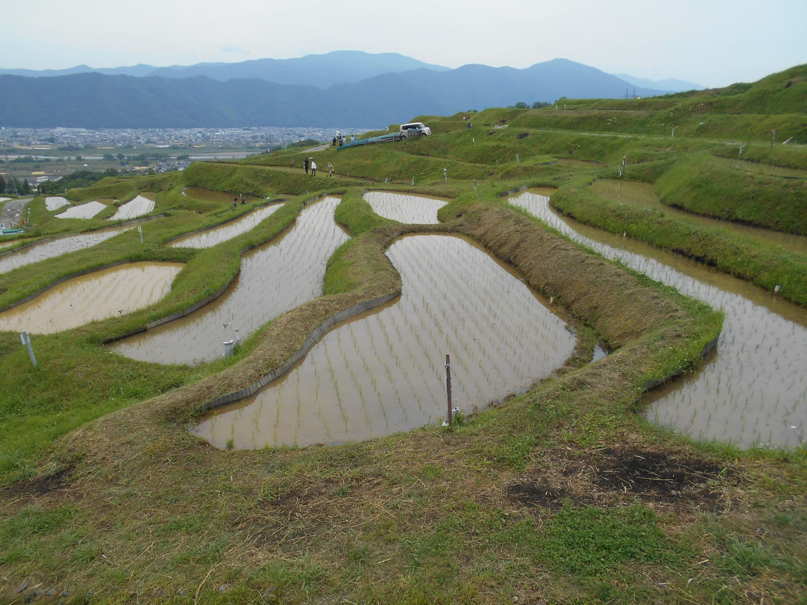
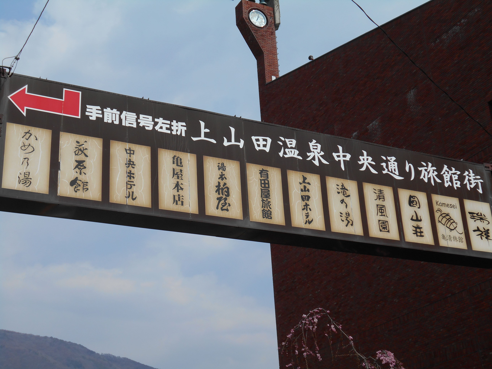

姨捨棚田
姨捨（おばすて）の棚田は、長野県北部の千曲市にある棚田です。
一級河川である千曲川や、善光寺平と呼ばれる長野市を中心とした盆地を臨む標高460m～560mに、階段状の水田が約2,000枚（約64.3ha）に渡り広がっています
戸倉上山田温泉街
- ホテル亀屋本店
- 万葉超音波温泉
- 世界通り
等々


Sites
姨捨（おばすて）の棚田は、長野県北部の千曲市にある棚田です。
一級河川である千曲川や、善光寺平と呼ばれる長野市を中心とした盆地を臨む標高460m～560mに、階段状の水田が約2,000枚（約64.3ha）に渡り広がっています
等々

